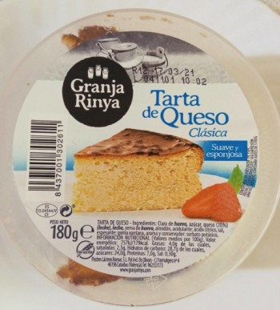

Introducción al desarrollo
RECETA DE TARTA DE QUESO
Fuente: deRechupete

INGREDIENTES
- 1 kg.. de vuestro queso crema preferido (crema de queso tipo Philadelphia)
- 5 huevos camperos
- 300 g. de azúcar
- 500 ml. de nata líquida o crema de leche para montar (mínimo 35% de grasa)
- 1 cucharada de harina de trigo ( unos 15 g. aprox.) También vale almidón de maíz o Maicena si eres celiaco
- 1 pizca de sal (5 g.)
- Un molde de 24 cm. de diámetro
- 2 hojas de papel de horno
PASOS A SEGUIR
- Forramos un molde redondo de 24 cm de diámetro. Mi consejo es humedecer con un poco de agua el papel de horno y arrugarlo para que sea más fácil de usar y que quede con esa forma rústica. Podemos usar dos papeles intercalados y medio arrugados, esto dará a la tarta ese aspecto rústico.
- Precalentamos el horno a 180º C con calor arriba y abajo (sin aire caliente).
- Cascamos los 5 huevos camperos y reservamos. Vamos a batir los ingredientes, podría hacerse con una varilla manual o con un robot de cocina. Ponemos el queso crema en un bol grandote y empezamos a batir con las varillas eléctricas para que el queso se vuelva aún más cremoso. Sin dejar de batir vamos incorporando poco a poco la nata.
- A continuación, añadimos el azúcar. Añadimos un huevo y batimos hasta que quede bien integrado en la mezcla. Cuando esté integrado añadimos el segundo huevo y seguimos así hasta integrar los cinco. Por último, incorporamos la harina y batimos hasta que todo quede bien mezclado. Pasamos el contenido del bol al molde forrado.
- Para el molde de 24 cm. horneamos aproximadamente 55 minutos en posición central con calor arriba y abajo. Si queremos que quede algo más líquida horneamos solamente 45-50 minutos. A los 30 minutos de horneado vamos vigilando que no se queme, si se está dorando demasiado cubrimos con un papel de aluminio. En el horno la tarta se hinchará mucho, es normal, se irá deshinchando cuando se enfríe.
- Cuando esté cuajada la tarta abrimos levemente la puerta del horno y dejamos atemperar en su interior durante 15 minutos con el horno apagado.
- Luego la sacamos del horno y la dejamos enfriar ya del todo a temperatura ambiente sobre una rejilla. Aunque la tarta baile estará hecha, poco a poco irá teniendo más consistencia y reduciendo su volumen. No desmoldamos.
- Cuando ya esté fría cubrimos con papel de aluminio o papel film y dejamos reposar de un día a otro en el frigorífico o al menos unas horas. Gana bastante en sabor si la dejamos toda la noche, así que si podemos planificar con tiempo es lo más aconsejable.
- El día siguiente sacamos la tarta del frigorífico 15-20 minutos antes de servir para que no esté tan fría. Desmoldamos, pero opcionalmente podemos dejar el papel para dar un aspecto más rústico y tradicional.
Contáctanos en tal dirección.